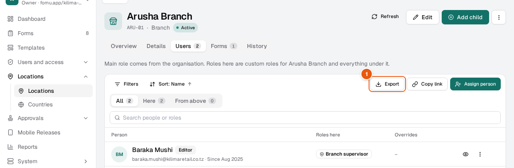
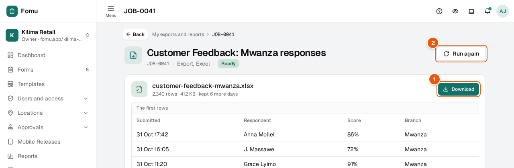
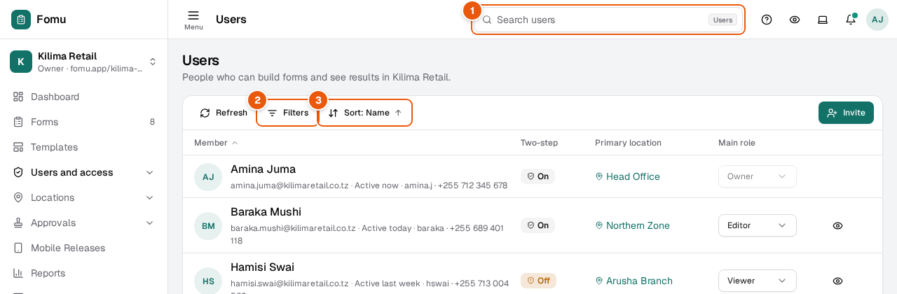
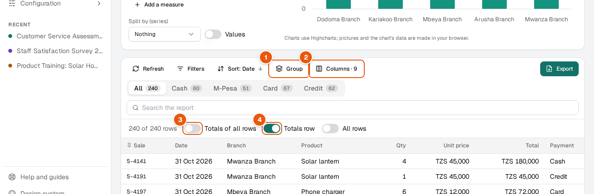
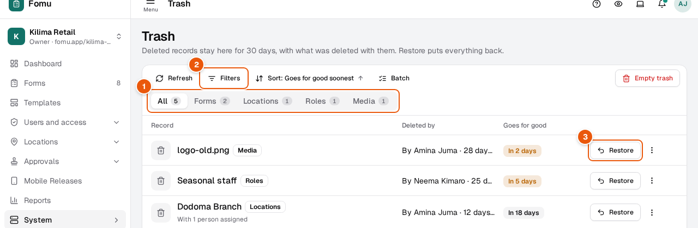

Who can do this: People allowed to export that list
An export runs in the background, so you can keep working while it is made. When it is ready, you get a notification that opens its page, where you download it.

1Export: choose Excel, CSV or PDF
Start the export
Filter and sort the list the way you want it in the file (see Find what you need in a list). The export uses the same rows and columns.
Tap Export1 and choose the format. A message says the export has started.
Download it

1Download the file
2Make it again with the same settings
When the notification arrives, open it. You can also find every export under your picture, top right, in My exports and reports.
Tap Download1. The page also shows the first rows and how many rows the file has.
Files are kept for 7 days. After that, tap Run again2 to make a fresh one with the same settings.
If an export fails, its page says why in plain words. Fix the cause, then tap Run again.
Every list in the product works the same way: search, quick tabs, filters and sort sit in the same places, and the list remembers them in its link, so you can copy the link and send someone the same view.

1Search this list (on a phone, tap the magnifier)
2Filters: by any field, simple or advanced
3Sort: which field, and up or down
Steps
Type a word in the search box at the top 1. On a list page it searches that list; the list narrows as you type. On a phone, tap the magnifier first.
Many lists have quick tabs above the rows (for example All, Cash, M-Pesa). Tap one to see only that group; its number says how many rows it holds.
For anything more, open Filters2. Choose the field, then what it should be. Each filter you add shows as a chip; tap the × on a chip to remove it.
Use Sort3 to choose the order. Tap it again to turn the order around.
The list keeps your search, filters and sort in its link. Press Refresh to load the newest rows without losing them.
A report is a list with totals. You choose its columns, which ones stay pinned on the left, how each number column is totalled, and whether rows are gathered into groups.

1Group rows by a field, with subtotals
2Show, order, pin and total the columns
3Totals of every row the filters match
4A totals row for the rows on screen
Steps
Tap Group1 and choose a field, for example By branch. Each group shows how many rows it has and their subtotals; tap a group to fold or unfold it.
Tap Columns2 to tick the columns you want, move them up or down, pin them so they stay on the left while you scroll, and choose each number column's total: sum, average, count, smallest or largest.
Switch on Totals of all rows3 to see, at the top, the totals of everything your filters match, on every page.
Totals row4 adds a row under the table with the totals of the rows on screen.
The table's header, pinned columns and totals row stay in place while you scroll. Tap Save view to keep all of this, for you or for your team.
Deleted records wait in the trash for 30 days before they go for good. Until then, they can be brought back exactly as they were, together with anything that was deleted with them.

1Show one module at a time
2Filter by who deleted it, or when
3Bring it back (on a phone: in the row's actions)
Steps
Open Trash from the menu (under System).
Tap a module tab 1 to see only its records, or open Filters2 to find it by who deleted it or when.
Tap Restore3 on its row (on a phone, open the row's ⋯ actions first). It goes back where it was, with anything deleted along with it (a task with its subtasks).
Delete for good cannot be undone: you are asked to type YES first.